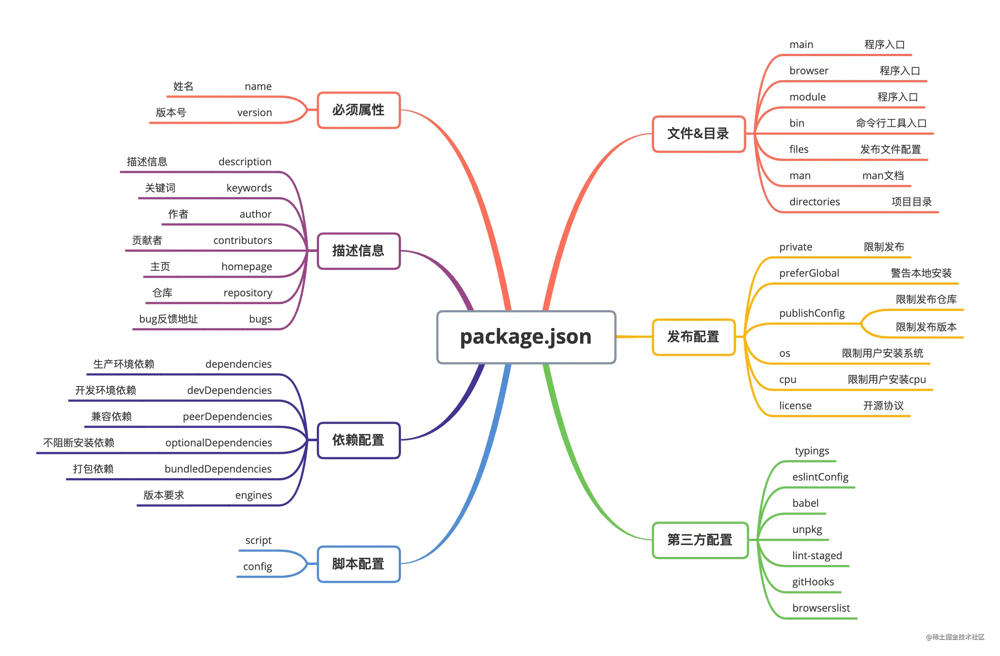
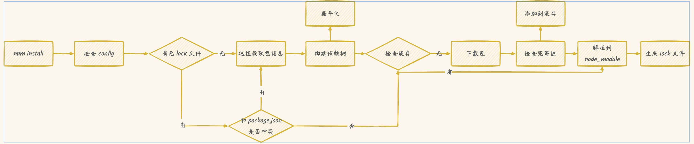
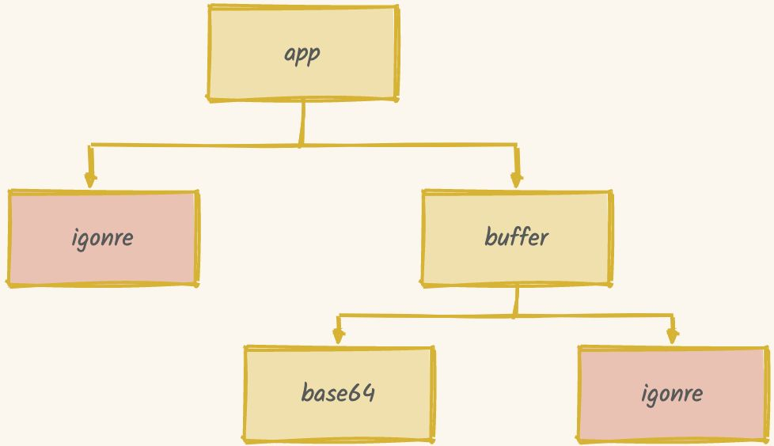
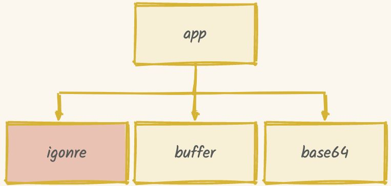
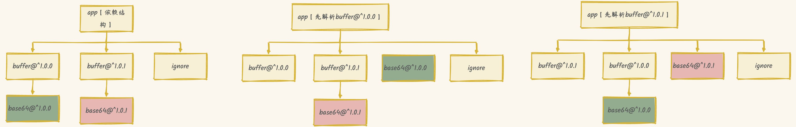

前置知识
npm 是什么
npm(node package manager)：node.js 的包管理器，用于 node 插件管理（安装、卸载、管理等）
package.json
- 用来描述项目和软件包信息
- 创建命令
npm init [-y|-f]
- package.json 相关配置：npm 官方文档–package.json

包版本
- ^：安装最新次版本，如 ^1.0.4 可能安装主版本 1 的最新次版本 1.3.0
- ~：安装最新补丁程序版本，如 ^1.0.4 可能安装次版本 1.0 的最新次版本 1.0.8
npm install 原理

检查配置
- .npmrc(npm running configuration)：npm 运行时配置文件，存在多个，
项目 .npmrc > 用户 .npmrc > 全局 .npmrc > npm 内置 .npmrc
- .npmrc 文件对 yarn 也通用
- 常用配置：仓库地址、node-sass 依赖地址、自定义缓存目录等
- 有关配置操作常见命令
1
2
3
4
5
6
7
| npm config set <key> <value> [-g|--global] // 配置参数
npm config get <key> // 获取参数 key 对应的值
npm config delete <key> // 根据 key 删除配置项
npm config list [-l] // 显示 npm 所有配置参数信息
npm config edit // 编辑配置文件
npm get <key> //获取配置参数 key 的值
npm set <key> <value> [-g|--global] //给配置参数key设置值为value；
|
构建依赖树
- 有 lock 文件：判断 lock 与 package.json 依赖版本是否一致，一致使用 lock 文件信息，反之根据 package.json 拉取远端依赖包信息
- npm 早期版本（<3.x）：npm 按照 package.json 结构以递归的方式处理依赖
- 优点：node_modules 与 package.json 结构一一对应，层级结构明显，且每次安装目录结构都相同
- 缺点：不同层级依赖中，可能引用了同一个模块，导致冗余；在 windows 系统中，文件路径最大长度 260 字符，嵌套层级过深可能导致不可预知的问题
1
2
3
4
5
6
7
8
9
10
11
12
13
14
15
16
17
|
{
"name": "app",
"dependencies": {
"buffer": "^1.0.0",
"ignore": "^1.0.0",
}
}
{
"name": "buffer",
"dependencies": {
"base64": "^1.0.0",
"ignore": "^1.0.0",
}
}
|

- npm 3.x：将嵌套结构改成扁平结构
- 当安装遇到相同模块时，已安装且版本符合则跳过，不符合则在当前模块 node_modules 下安装该模块
- 模块查找流程：当前模块路径下–>当前模块 node_modules–>上级模块 node_modules–>…–>全局路径中的 node_modules

- 弊端：npm install 是按照 package.json 依赖顺序来解析的，则依赖包的顺序会决定 node_modules 依赖结构，依赖结构的不确定性会带来未知的问题

- package-lock.json
- npm 5.x 版本出现，作用是锁定依赖结构，解决了依赖结构不确定的问题
1
2
3
4
5
6
7
8
9
10
11
12
13
14
15
16
17
18
19
20
21
22
23
24
25
26
27
28
29
| "@babel/generator": {
"version": "7.20.14",
"resolved": "https://registry.npmmirror.com/@babel/generator/-/generator-7.20.14.tgz",
"integrity": "sha512-AEmuXHdcD3A52HHXxaTmYlb8q/xMEhoRP67B3T4Oq7lbmSoqroMZzjnGj3+i1io3pdnF8iBYVu4Ilj+c4hBxYg==",
"dev": true,
"requires": {
"@babel/types": "^7.20.7",
"@jridgewell/gen-mapping": "^0.3.2",
"jsesc": "^2.5.1"
},
"dependencies": {
"@jridgewell/gen-mapping": {
"version": "0.3.2",
"resolved": "https://registry.npmmirror.com/@jridgewell/gen-mapping/-/gen-mapping-0.3.2.tgz",
"integrity": "sha512-mh65xKQAzI6iBcFzwv28KVWSmCkdRBWoOh+bYQGW3+6OZvbbN3TqMGo5hqYxQniRcH9F2VZIoJCm4pa3BPDK/A==",
"dev": true,
"requires": {
"@jridgewell/set-array": "^1.0.1",
"@jridgewell/sourcemap-codec": "^1.4.10",
"@jridgewell/trace-mapping": "^0.3.9"
}
}
}
},
|
- lock 文件可显著加快依赖安装时间：在 lock 文件中缓存每个包的具体版本和下载链接，不需要去远程仓库查询，减少大量网络请求
依赖生成
- npm 在下载依赖之前会检查是否有缓存资源
有缓存
- 将缓存按照依赖结构解压到 node_modules 目录下
- npm install 之后，除将依赖包安装在 node_modules 目录下，还会在本地缓存目录中缓存一份
npm config ger cache 查看缓存目录路径- .npm/_cache：content-v2 存储 tar 包，index-v5 存 tar 包 hash
- npm install 是通过 lock 中 integrity、version、name 生成 key 对应到 index-v5 目录下缓存记录，找到 tar hash，根据 hash 找 tar 包使用
无缓存
- 从 npm 远程仓库下载包
- 校验依赖包完整性：通过比对新旧
integrity 的 hash 值
- 校验通过：将下载依赖包备份在缓存目录备份，然后按照依赖结构解压到 node_modules 目录下
- 校验不通过：重新下载
离线安装模式
- –prefer-offline：优先使用缓存数据，匹配不到缓存去远程仓库下载
- –prefer-online：优先使用网络数据，请求失败后去请求缓存数据，这模式可以及时获得最新模块
- –offline：不请求网络，只使用缓存数据，缓存数据不存在，则安装失败
.bin 文件
npm install 时会读取依赖包中 bin 下文件，将它软链到 node_modules/.bin 下，.bin 目录下存储的是一些依赖包的脚本文件- 用途举例：当运行
npm run serve 时，实际执行的是 package.json/scripts/serve 下的 vue-cli-service serve命令，相当于执行了 ./node_modules/.bin/vue-cli-service serve
- .bin 文件查找优先级：
项目 node_modules/.bin > 全局 node_modules/.bin > path 环境变量同名程序
幽灵依赖
- 简述：项目本身没安装，但由于项目子依赖安装了孙依赖，所以在项目可以间接使用孙依赖，例如应用 A 和 A 中的插件 P
- P 中有依赖 “dayjs”，dayjs 安装在 P 的 dependencies 中，A 中没有安装 “dayjs”
- A 直接使用 “dayjs”，不会报错，因为安装 P 时已将 P 中的 “dayjs” 安装在 A 的 node_modules 下，可以使用，这就是幽灵依赖
- npm 和 yarn 由于都采用扁平化 node_modules 结构，所以都存在幽灵依赖的问题
- pnpm 将所有项目依赖包放在一个资源仓库，通过软链形成嵌套的 node_modules，解决了依赖冗余问题，并且未提升依赖，避免了幽灵依赖问题
1
2
3
4
5
6
7
8
9
10
11
12
13
14
15
16
17
|
node_modules
├── foo -> ./.pnpm/foo@1.0.0/node_modules/foo
└── .pnpm
├── bar@1.0.0
│ └── node_modules
│ └── bar -> <store>/bar
└── foo@1.0.0（不将子依赖提升）
└── node_modules
├── foo -> <store>/foo
└── bar -> ../../bar@1.0.0/node_modules/bar
node_modules
├── A
├── B
└── foo（提升的子依赖）
|
参考
npm install 原理分析